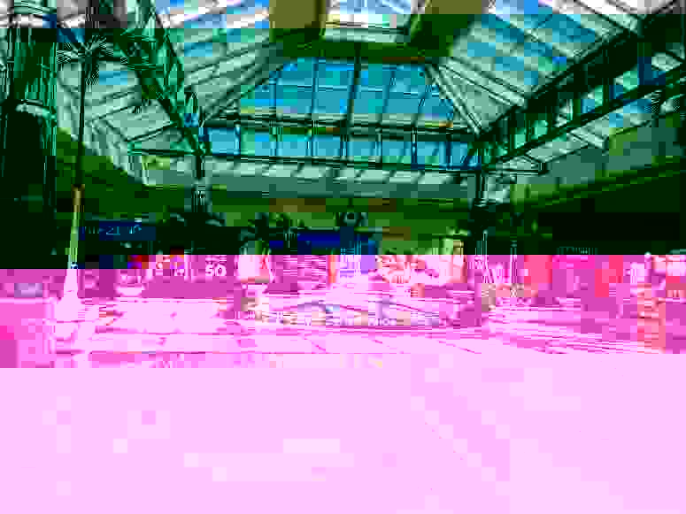
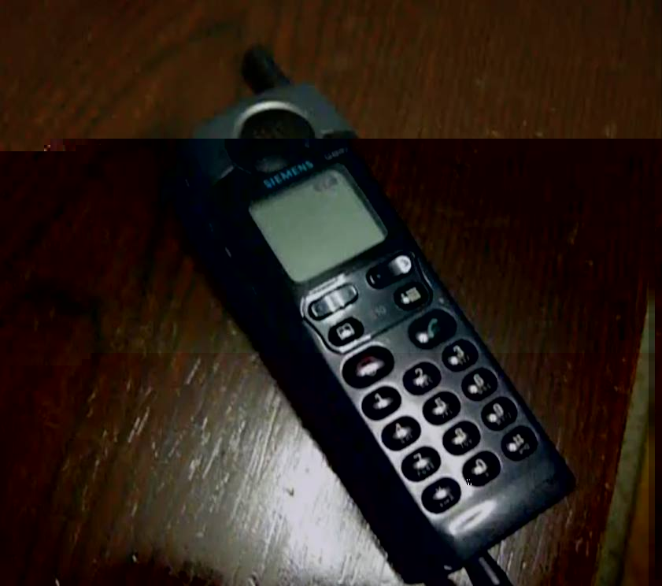
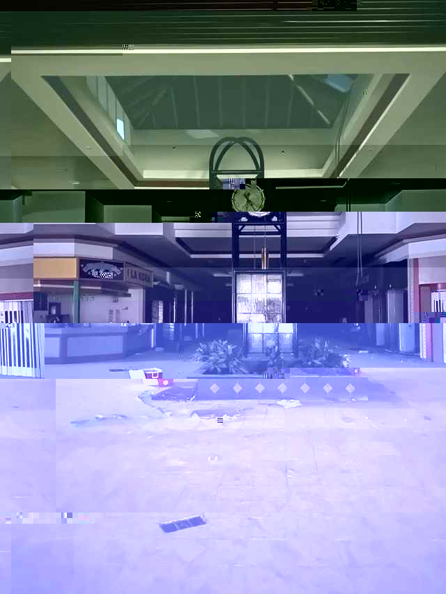

This is where I share what's been going on with me so you can keep up with my life through the internet!
08/02/98 - Lindsay and I spent the whole week at home catching up on homework so I’ve been restless all week. Mom only gave me an hour on the computer today so I haven’t been able to work on the site much.
08/08/98 - I dragged Lindsay out to the woods this week and we caught a frog! (Sorry Linds…)
08/15/98 - I went exploring in the woods behind my house today and found something interesting. There was a hole in the ground at the base of a tree — at first I thought it must have been a fox den, but it was too big to be a fox den, so then I thought it had to be a hidden bomb shelter. So of course I went down into the opening to see what was down there.
It was like a tunnel at first, but dark and kind of wet. Good thing I had my flashlight with me, or else I would have totally tripped when I reached the stairs! It was a sudden landing a few paces down into the tunnel, they were muddy almost like they were cut from the dirt at first, but as I made my way down they seemed to get more solid, like hard concrete.
It went down and down and down for miles. I thought for sure I’d reach the other end of the world when I’d gotten to the bottom! Whoever built that shelter must have not wanted anything to get to them… Well I only got so far down before I realised I needed to be home for dinner. I’d been down there for a good 30 minutes!
08/23/98 - Nothing much happened this week :-(
08/31/98 - I brought Lindsay to the hole this past weekend, but she only got halfway down the tunnel before she backed out. She begged me to come back out with her so I did, but I still want to know so badly what’s down there!
09/04/98 - This week I’ve been going door to door selling pretzels and popcorn and all kinds of stuff for school. I’ve got so much money now! I’ve been saving up to get a new phone. I’ve been eyeing the Siemens S10 for a while now.
I’ve been thinking about going back down there.
09/09/98 - Took Cobalt to the vet today for a cough he’s been having, thankfully the vet said it was just hairballs and nothing major. Lindsay and I watched The Truman Show this last Saturday and it was really good and creepy.
09/12/98 - I’ve been keeping this to myself for a couple of days, but I can’t hold it in anymore! I’ve gotta tell somebody. (Sorry Linds!)
I’ve been going back to the hole every other day just to see how much further down it goes. Honestly it still feels like it goes on and on forever, but I finally hit the bottom the other day after two hours and you won’t believe what I found.
The stairs go down into a slightly bigger room with a big light on the ceiling. It was already on but I couldn’t find a switch for it. There’s some kind of metal gate and a big door behind it — well everything was super rusty but I was able to get it open just fine with my hands. I pushed the door open too and you’ll never believe this but I swear I saw it with my own two eyes! There was a whole shopping mall down there!!
I didn’t get the chance to look around much before I had to get home, or else my mom would’ve come looking for me. I haven’t told her about the hole and she doesn’t like to go on the internet. Oh well. Now you and Lindsay know all about my little secret, but keep it between us okay? Now that I know what’s down there I HAVE to go back and explore it even more.
09/15/98 - I went to the tunnel again yesterday after school, so I’d have more time to look around. I thought if it wasn’t actually a shopping mall down there and I’d dreamed it, then it wouldn’t still be there if I checked again. Or maybe it was just a facade of some kind.
But it wasn’t. There really is a shopping mall down there.
This time I took my dad’s big flashlight that we use only for blackouts so i could see better. When I got back down to the doors I was hit with this smell, like this old mall smell, like there had been hundreds of people walking around and shopping just a second before but now they’d all vanished. It smelled dusty too, but not in the way that abandoned buildings usually do. It smelled like skin and clothes and wet shoes. I could have been imagining it but I swear that’s what it smelled like.
there were people here id met before many many times
The whole place was lit up too, but I swear it wasn’t when I first saw it. The lights were all yellow and sickly-feeling but the floor felt all clean, at least as clean as mall floors could be. And it was a huge place! Big enough like it were an actual shopping mall. I keep wondering why anyone would build a whole shopping mall underground with such a terrible entryway. Lindsay couldn’t even get halfway down and she loves shopping.
Anyway I walked around for a bit. I got this creepy feeling like I wasn’t alone, not that feeling of being watched but of being in a crowd, like when you’re at the park. I kept feeling like I wasn’t alone. All the stores were full of clothes and stuff, and there was even a Circuit City! (I thought I saw a Burger Chief, I’m not sure since they all closed down here last year.) I didn’t get to look around much before it was time to head back home — I hadn’t even realised how much time I spent down there, maybe three whole hours. But I need to go back down there again and see if the Circuit City has things in it too. Maybe there’s food too?
09/18/98 - I went back, but only for a quick look around.
I realised last time that I had only explored one level. There were floors up and down (maybe that’s why the entry was so deep?) I tried to see how far down and up they went, there was only one more level up, but I couldn’t even see the bottom of the mall at all.
The Circuit City had working phones in them, and all kinds of computers that I’d only ever seen on TV. Some didn’t even look like computers, they were super slim and all silvery. I didn’t take anything, in case maybe they belonged to someone… Maybe this is a new mall that hasn’t been opened yet? Well I didn’t take anything but I did try out all the phones. They even had an S10! When this mall is opened I’ll be the first one to buy it!
09/19/98 - Lindsay finally agreed to join me because she says I must be lying. We’re going back on Monday!
09/21/98 - It was so funny seeing how freaked out Lindsay was going down the tunnel, at one point she even started shaking so bad we nearly both fell down the stairs! But we eventually made it down scratch-free, and the mall was still there the way I left it. This time I brought my camera, but all the pictures I took got corrupted somehow.

That last picture is the best one I was able to take, from the top floor of the mall. I know it isn’t much for proof but you can ask Lindsay, because she saw it too!
We didn’t spend long down there because Lindsay kept wanting to leave. She said she saw things moving in the corners, and that she was “hearing voices” down there. So we left before she could get any crazier.
09/22/98 - I’ve been thinking about the mall so much it’s driving me crazy! I asked around and none of the adults have any clue and think I’m talking crazy too. I got some emails from people who just wanted to make fun of me. But it’s real and I can prove it.
09/24/98 - I took a phone

It's real. The phone works and everything, I didn't just buy it from anywhere, I got it from the mall. It's real.
I've been hearing things in my room at night. They're not even creepy ghost voices, they sound like people talking in the room next to mine, but I know I'm just hearing it in my head because when I check my parents are fast asleep, and I don't hear it anymore.
I promised Lindsay I wouldn't go back down there after I took the phone, but now it's all i can think about.
lately i keep having to rewrite the files of this page because i keep finding weird notes i don't remember writing. but maybe It's just because I've been having a headache, so i don't remember.
I went back. I keep hearing people and footsteps in my room, but they aren't scary. They walk me back to the woods and I remember what was down there, things we haven't seen and won't see for a long time. There are people shopping. I can hear them, and I can see them, because I remember them. I walk and I breathe and the air feels so good.
sorry i haven't been to school. my parents think im sick but really i go to the mall when theyre at work and i just walk around. there are more than fifty floors down there, down there. i really like it, my head doesn't hurt, and the people there are nice. i walk and i breathe and the air feels so good.
Lindsay keeps coming over to make sure I stay home, I don't remember why.
